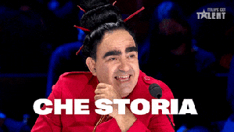

La simmetria dei desideri, Eshkol Nevo, Neri Pozza, 2010
Home › Blog
Ammartaggio
Accanto ad uno dei miei scrittori preferiti, David Grossman - leggetelo - , c'è ormai da parecchi anni un altro dei massimi
scrittori israeliani viventi: Eshkol Nevo. Mi sono, però, avvicinata da poco a quest'ultimo, tramite:
Il film "Tre piani" , il cui libro, regalatomi al compleanno, è pronto sul comodino per essere aperto;
La sua nuova rubrica Anatomia dei sentimenti , su Vanity Stars;
La presentazione , del suo ultimo "Le vie dell'Eden" immersa nel verde del Bosco degli scrittori, una nuovissima e bellissima - qui
non posso fare a meno di usare il superlativo assoluto - realtà all'interno del padiglione Oval del Salone del Libro di Torino 2022.
Non sono un'esperta di scrittura israeliana ma, leggendolo, non ho potuto non trovare un importante aspetto in comune tra i due scrittori sopra citati che - guarda la coincidenza -
è stato proprio il motivo del mio imprinting letterario durante l'infanzia: l'introspezione - ero già molto pesante a dieci anni -.
Ambientato tra Haifa e Tel Aviv, e "La simmetria dei desideri" si apre con un prologo intitolato A tutti gli interessati,
in cui viene brevemente spiegata l'origine di questo manoscritto e chiarito immediatamente il vero autore delle pagine: Yuval.
Yuval decide, infatti, di scrivere della sua vita e la sua vita
è praticamente nulla senza i soggetti di questa storia: i suoi tre amici-per-la-pelle.
Sinceramente non ho idea del perché. Se sia l'inerzia oppure il fatto che, ancora dopo otto anni a Tel Aviv, noi tutti sentiamo di appartenere a qualcosa solo quando siamo insieme.
Altre volte invece c'incontriamo e mi sembra che non abbiamo niente a che fare uno con l'altro, mi sembra che niente abbia senso.
Eviterò di paragonarmi, ancora e ancora, al protagonista di questo libro. Però scusatemi:
Nonostante fossi tentato, non ho chiamato i miei amici, perché avevo la sensazione che da quell'abisso dovessi uscirne da solo. Cretinate. È solo una spiegazione boriosa
che invento a posteriori. Non ho chiamato gli amici perché non me la sentivo di farmi vedere in quelle
condizioni. No, anche questa è una copertura. Non ho chiamato gli amici perché sono una persona sola a un livello che stento a spiegare anche a me stesso. Sono una persona sola che ha molti amici. Una persona sola che ha
imparato a stare al mondo come se fosse socievole, ma nei momenti dolorosi si ritrae sempre nella sua posizione di partenza.
Ok, con questo Blog sto iniziando a pensare che non sia un'estrema empatia, quella che provo, quanto una forma di egocentrismo patologico che mi richiederà più tempo e analisi del previsto.
Darò quindi spazio alla domanda: avete inteso cosa dice Yuval nella prima citazione? Se l'avete compresa siete
sicuramente nati in un paese dalle dimensioni ridotte, avete avuto un'ampia libertà di scelta da parte dei vostri genitori,
una scarsissima propensione al coraggio che richiedono i rapporti uno-a-uno, una grandissima inclinazione alla dedizione e
soprattutto molto, molto tempo libero:
Evidentemente non è un caso se la maggior parte delle amicizie nasce al liceo o durante un viaggio.
Ci vuole una generosa porzione di tempo libero per avvicinarsi.
Tema centrale quindi è la relazione interpersonale più conosciuta, difficile e mal descritta nella Storia delle Relazioni Interpersonali.
Ma ecco che invece qui, Nevo, si presenta come il Re, il Vincitore olimpico, il Professore, il Papa, il Dirigente ma ancor prima
l'Imprenditore, il Genio e il Creatore di questo rapporto: l'amicizia, seppure, facendo parlare il suo personaggio, scrive:
In effetti, l'amicizia è una faccenda strana, secondo me [...] è difficile quantificare e calcolare distanza e vicinanza,
fedeltà e tradimento, amore e nostalgia. E forse non è neppure necessario.
Non ti preoccupare, Eshkol, ne sei uscito vittorioso!
Siamo quindi di fronte al classico esempio di umiltà e bravura senza pari. Tradimenti, errori, lutti, fantasmi, crescita, shock, ribellioni, figli, lavori, passioni, tutte le difficoltà della vita vengono
rappresentate con estrema leggerezza ma grande meditazione e i quattro amici finiscono sempre per soccorrersi come fratelli.
Il legame è tra quattro uomini ma credo che, come le poche cose meravigliose su questo pianeta, il genere non cambi la sostanza: l'amicizia che scorre nelle loro vene è la classica amicizia nata in giornate in cui
"Non ho proprio voglia", cresciuta a bevute e riflessioni che sembravano profonde la sera prima ma che risvegliandoti ti paiono assolutamente evitabili,
maturata con gli inviti a cena e i "Non ti riconosco più", invecchiata con i "Ti prego rispondimi, non mi capirebbe nessun altro".
Le note che compaiono in alcune frasi del libro vanno lette - lo so che lo fareste comunque - perché sono appunti e precisazioni che scrive Yoav, detto Churchill,
il revisore del testo nonché uno dei quattro amici della combriccola, che si ritrova tra le mani questo ultimo desiderio inespresso del suo Yuval e non può far altro che realizzarlo:
Questo pensiero mi ha accompagnato per anni: Esiste il mondo sublime, superiore, spaventoso, degli scrittori. Ed esiste il mio mondo. Quello semplice. E fra i due si erge un'alta palizzata. Mentre traduco, posso arrampicarmi sulla palizzata
e sbirciare nell'altro mondo, ma alla fine devo sempre tornare al mio. Perché sono un uomo comune, banale. Chi sono io per scrivere?
Gli altri due amici sono Amichai dal corpo solido, la cui postura rivela che è in grado di sorreggerti, e ha gli occhi colore
della terra, un
uomo che dovrà sopportare tanto dolore quanta soddisfazione nella realizzazione di sé e di ciò in cui non si immaginava minimamente
di finire, sempre in lotta con Ofir, il pubblicitario dall'ultima parola, il lamento fatto a persona ma anche il più simpatico del
gruppo che dà prova di quanto l'amore possa cambiare, no anzi di quanto sia proprio l'innamoramento l'unica spinta grazie alla quale
chiunque - chiunque! - riesce a spogliarsi delle sue precedenti vesti per intraprendere un nuovo viaggio, un nuovo percorso, una nuova metamorfosi, un nuovo sogno o anche solo un miglioramento.
Il fil rouge che ci tiene incollati e che tiene uniti i quattro amici sono i Mondiali del 1998 e del 2002, a dimostrare come
non è solo l'Italia a vivere per il calcio, ma soprattutto come quest'ultimo rappresenti non solo uno sport, non solo un evento,
non solo un motivo di aggregazione e non solo la principale fonte di guadagno di alcuni paesi, bensì un appuntamento importante
per trarre conclusioni, tirare le somme, fare un resoconto dei vari mutamenti avvenuti in questi quattro anni. Se ne sono avvenuti, però.
Per questo, può essere anche fonte di grande ansia da prestazione, frustrazione e sofferenza: non tutti cambiano, non tutti insieme e
soprattutto non tutti sempre. È il caso del protagonista: La loro gioia di vivere mi pareva superficiale. Materialista. Miserabile.
Li disprezzavo e insieme li invidiavo. Mi sentivo più puro di loro. Più profondo. E allo stesso tempo sentivo
che loro conoscevano una meravigliosa leggerezza che io non avrei conosciuto mai, solo perché dentro di me ero rimasto uno di Haifa.
Sono molte le occasioni che vi faranno provare l'incessante necessità di abbracciare il protagonista inconsapevole delle proprie
capacità, prendergli il viso tra le mani e dirgli che è normale non evolversi in continuazione, sprecare tempo, non avere continui
obiettivi, lasciare che alcuni anni passino così, senza grandi frutti da raccogliere. In ogni pagina ho aperto nella mia mente l'enorme
parentesi della malattia del nostro tempo: il culto della velocità, della realizzazione veloce, del rispettare le richieste di questa
società che ti impone di prendere il primo biglietto - ovviamente un Freccia Rossa prima classe - e salire immediatamente a bordo prima
ancora di sapere la destinazione. Il treno non lo uso come esempio casuale: ad un certo punto Yuval incontra una ragazza, una coach,
una Yaara numero due - ma anche una Marta numero due - che decide di illuminarlo su di un fatto, senza che ovviamente le fosse stato
chiesto alcun tipo di parere. Gli dice che lui è il classico caso paradigmatico di modello del treno di fronte: quando il tuo treno è
fermo alla stazione, e il treno di fronte inizia a muoversi, ti sembra che il tuo treno si muova. In realtà però non si muove. È solo
un'illusione ottica. Direi che forse vivi la vita dei tuoi amici, invece che la tua. Prima di leggere questo libro avrei mosso la testa
in segno di approvazione verso questa analisi. Ma sfogliandolo capisci che non sempre gli amici, i compagni, la comunità, la società,
dunque il confronto e il paragone, sono nocivi. Non capirei, diversamente, il motivo per il quale mia madre ai miei due anni ha sentito
la necessità di obbligarmi all'asilo nido. A volte - sempre - muoversi continuamente come dei topi in gabbia, insieme agli altri topi,
non è l'atteggiamento giusto. Ma neanche isolarsi nel deserto affinché tu riesca a trovare il tuo vero equilibrio, è la soluzione.
Spesso, invece, è più utile convivere, fermarsi e guardare gli altri dal basso in cui siamo, osservare le loro azioni con senso critico,
facendoci ispirare consapevolmente verso ciò che vorremmo essere e ciò che non vorremmo essere, imparando dai loro errori e anche dalle
loro vittorie, diventando competitivi, consci di quello che avremmo potuto raggiungere anche noi e quello che no, non fa proprio al caso
nostro. Insomma, Yuval non avrebbe mai, e dico mai, raggiunto la consapevolezza di voler scrivere, non avesse letto i desideri altrui;
non avrebbe mai trovato motivo di continuare a vivere, non si fosse paragonato - e ispirato- ai cambiamenti dei suoi quattro
amici-fratelli ed insieme non si sarebbe mai giunti alla simmetria perfetta.
Churchill dice questo e un attimo dopo, rimasto solo con il protagonista, si fa giurare che davvero non ci sarebbero cascati,
e lo chiede proprio a lui, al suo silenzioso e introspettivo amico perché "Senza di te non ce la faccio".
È proprio questa, una delle qualità di cui può vantarsi Yuval: la solidità, la presenza, l'autocontrollo che di conseguenza fanno di
lui il punto di riferimento per gli altri tre.
Mentre, infine, Churchill appare come l'avanguardista del gruppo - che poi si rivelerà invece essere Amichai -, la guida della
comitiva -
che poi si rivelerà invece essere Yuval -, il più bello e il più intelligente, colui che è stato allevato a pane e mai temere di
primeggiare, mai temere di avere successo, l'egoriferito, il prepotente, l'insegnante e di conseguenza il più bisognoso, il più debole
e il più insicuro.
Comunque le pagine sono all'incirca trecento, quattrocentosettantanove sul mio Kobo, che narrano le vicende di questi quattro
elementi: acqua (Yuval), fuoco (Churchill), terra (Ofir) e aria (Amichai) che io, per sfortunata - per gli altri - inclinazione
all'astrologia ho scoperto essere proprio i segni delle mie amiche, ma che in realtà rappresentano la solita riflessione metaforica
di Nevo, alla perenne ricerca di equilibrio. Anche in
"Tre piani" avviene un'associazione simile: ogni piano si fa metafora di un livello freudiano dell'inconscio - 1 Io, 2 Es e 3 Superio -.

Ad ogni modo tranquilli, non c'è di che annoiarsi neanche per chi non è introspettivo, filosofeggiante, socievole né
amante dello sport, perché vi è anche il nemico - a volte - dell'amicizia: l'amore. Ci sono tre donne - sì, gli amici sono quattro... -,
la prima classica intellettuale sexy che maneggia i suoi occhiali in maniera differente in base
a chi si trova di fronte, la seconda classica enigmatica, dilemma del sei snob o timida?
E la terza classica solare altruista che misteriosamente le intemperie e le ingiustizie della vita non hanno mai cambiato.
In tutto ciò manca tutta la questione palestinese, citata per troppo poche pagine ma che, inevitabilmente, si sente come una musica
lenta e appena percepibile in sottofondo. Siamo sicuramente di fronte ai soliti problemi di tutti noi comuni mortali ma che appartengono
a quattro ragazzi la cui vita è decisamente più a rischio della nostra - per ora - e di conseguenza i ragionamenti e le conclusioni mi
sono sembrate leggermente al di sopra della media - delle mie conoscenze -.
In sintonia con il clima, il periodo dell'anno e il mood di questi giorni estivi - tralasciando crisi di governo, voli cancellati,
JWST che spero abbia abbattuto le certezze di alcune persone e, soprattutto, della Chiesa, boom di contagi, inflazione, caldo record,
scarsità d’acqua, guerra, povertà assoluta e altre scioccherie varie -, c'è una parte che vale la pena ripetere - ma dovrete arrivare
fino alle ultimissime pagine per leggerla interamente - in cui viene descritto il mare e la
sua grande potenza magnetica, che molti fortunati residenti sulle coste italiane, e non solo, credo possano comprendere e confermare:
Il momento in cui la strada si libera dalle colline di arenaria e d'un tratto appare il mare, non una striscia stretta ma
tutto il grande blu, in quel punto viene sempre voglia di lasciar perdere tutti i piani precedenti, tutte le incombenze importanti,
di parcheggiare la macchina sul bordo della strada, spogliarsi e correre verso le onde, persino
mentre andavate al funerale [...] ma anche adesso non parcheggi la macchina, continui a guidare, perché devi, devi assolutamente...
Continua a leggere

Tomorrow, Gabrielle Zevin, Nord, 2022
10 Maggio 2025
Alla veneranda età di 26 anni ho approcciato per la prima volta agli audiolibri come antidoto contro la noia di
camminare per andare al lavoro. Non sono il tipo che cammina per sport né per piacere. Cammino per necessità.
Leggi l’articolo

Klara e il sole, Kazuo Ishiguro, Einaudi, 2021
16 Giugno 2022
Ho letto giusto due giorni fa la conversazione tra un ingegnere di Google,
Blake Lemoine, e la sua LaMDA, un’intelligenza artificiale utilizzata per generare chatbot che interagiscono con gli utenti.
Qui trovate la reale conversazione avvenuta tra l’ingegnere e l’IA che ha tutto a che vedere con una qualsiasi interazione che...
Leggi l’articolo

Monsieur Solitaire, 4321, Paul Auster, Einaudi, 2017
1 Settembre 2024
Cosa sarebbe stato della nostra vita se invece di quella scelta ne avessimo fatta un'altra?
Che persone saremmo oggi se quel giorno non avessimo perso il treno, se avessimo risposto al saluto di quella ragazza,
se ci fossimo iscritti a quell'altra scuola, se... Ogni vita nasconde, e protegge, dentro di sé tutte le altre che non si sono realizzate,
che sono rimaste solo potenziali...
Leggi l’articolo

Due chicche per gli amanti dei libri sui libri
1 Settembre 2024
Due libri per chi è "del mestiere", ossia due libri che potrebbero piacere maggiormente
ai rari esemplari che hanno deciso di fare il dottorato o, ancor peggio, di entrare nel mondo dell'editoria.
Leggi l’articolo

L'opposto di me stessa, M. Mason, H. Collins, 2022
5 Maggio 2022
Perchè quando la sofferenza è inevitabile, l’unica cosa che si può scegliere è lo scenario. Martha ha quarant’anni e
una vita apparentemente perfetta, un uomo che la venera dall’infanzia e una famiglia stramba ma piena d’amore. Eppure è infelice.
Leggi l’articolo

Ballo di famiglia, David Leavitt, SEM, 2021
17 Maggio 2021
Non voglio dire che le famiglie italiane siano migliori – se ancora ne esistono -,
ma dopo aver letto anche solo uno di questi racconti converrete con me che forse forse ci è andata ancora bene.
Leggi l’articolo